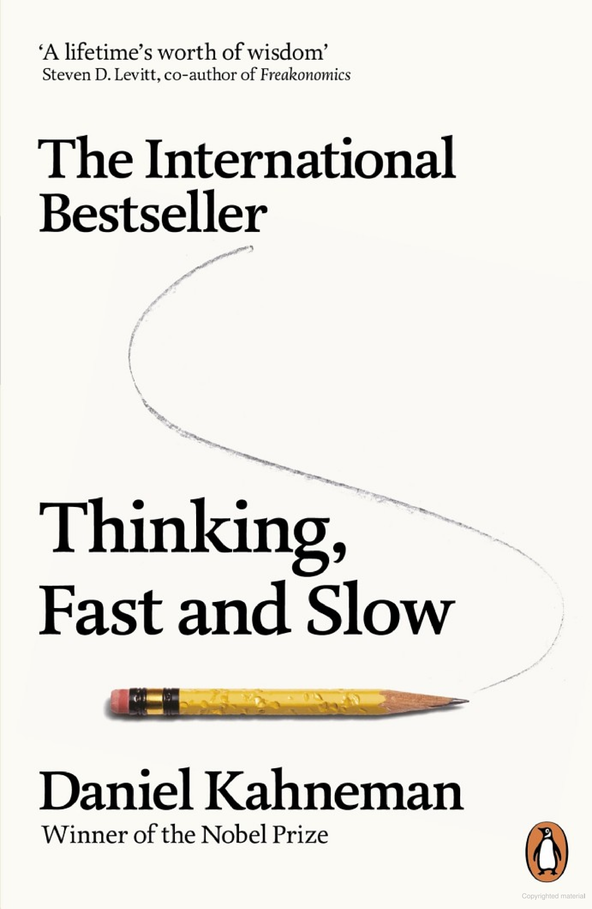
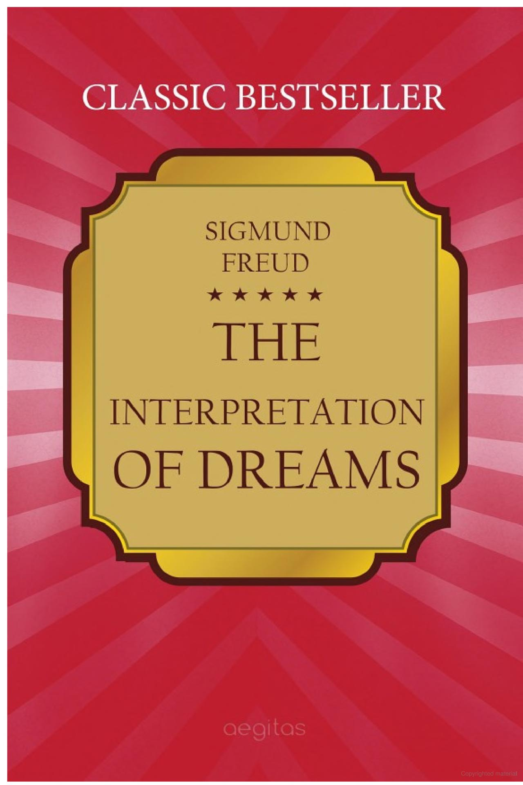
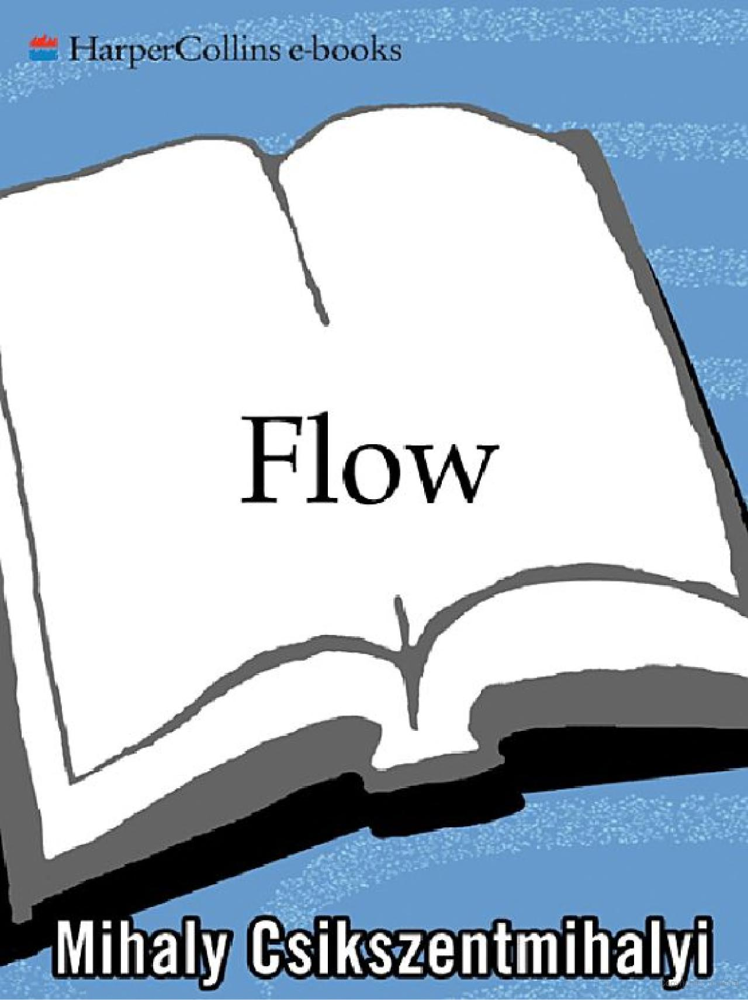
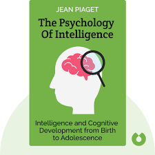
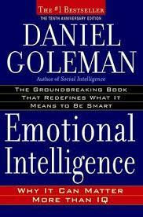
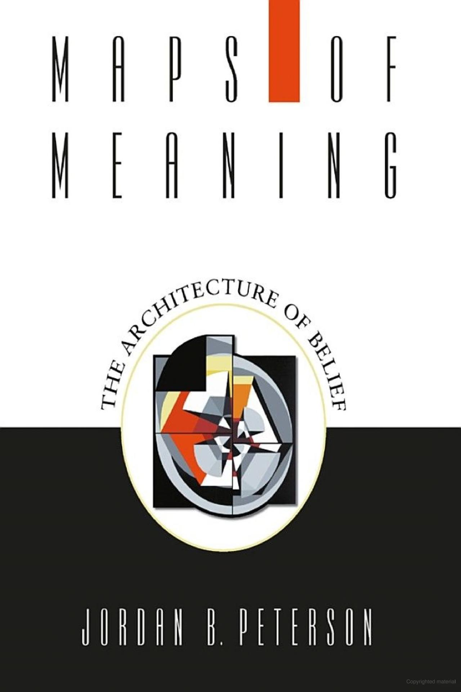
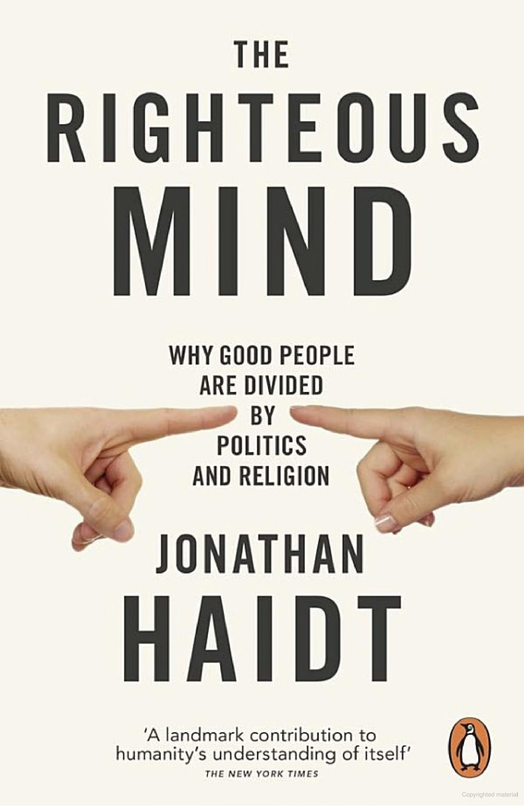

Man's Search for Meaning
Viktor E. Frankl
Delve into the profound exploration of human existence and find purpose amidst life's challenges in "Man's Search for Meaning." Viktor E. Frankl, a Holocaust survivor and renowned psychiatrist, shares his transformative journey and insights into the search for meaning and fulfillment. This poignant memoir reminds us of the power of resilience and the ability to find meaning even in the most difficult circumstances, offering profound lessons that will resonate long after you turn the last page.
Thinking, Fast and Slow
Daniel Kahneman
Immerse yourself in the fascinating exploration of human thought processes with "Thinking, Fast and Slow." Daniel Kahneman, a Nobel laureate in economics, presents groundbreaking insights into the two systems that drive our thinking—intuition and rationality. This book challenges our assumptions about decision-making, biases, and judgment, empowering readers to make more informed choices and navigate the complexities of the human mind.
The Interpretation of Dreams
Sigmund Freud
Delve into the depths of the unconscious mind with "The Interpretation of Dreams" by Sigmund Freud. This seminal work in the field of psychology explores the hidden meanings and symbolism behind our dreams, shedding light on the intricate interplay between the conscious and unconscious realms. Freud's profound analysis provides a deeper understanding of the human psyche and its hidden motivations, offering valuable insights into our thoughts, desires, and fears.
Influence: The Psychology of Persuasion
Robert Cialdini

Uncover the psychology behind persuasion and influence with "Influence: The Psychology of Persuasion." Robert Cialdini masterfully explores the principles and techniques employed by skilled persuaders, shedding light on how we are influenced and why we comply with certain requests. This book equips readers with the knowledge to recognize and resist manipulative tactics while providing valuable insights for effectively persuading others in an ethical manner.
Flow: The Psychology of Optimal Experience
Mihaly Csikszentmihalyi
Discover the secret to achieving optimal performance and happiness through the concept of flow in "Flow: The Psychology of Optimal Experience." Mihaly Csikszentmihalyi explores the state of complete immersion and focus that leads to peak performance and deep fulfillment. By understanding the conditions that foster flow, readers can cultivate a greater sense of purpose, enjoyment, and personal growth in various aspects of their lives.
The Psychology of Intelligence
Jean Piaget
Unravel the complexities of intelligence and its multifaceted nature in "The Psychology of Intelligence." Robert Sternberg presents a comprehensive exploration of intelligence, examining various theories and factors that contribute to intellectual abilities. This book challenges traditional notions of intelligence, encouraging readers to adopt a broader perspective and explore the diverse ways in which intelligence can be understood and measured.
Emotional Intelligence: Why It Can Matter More Than IQ
Daniel Goleman
Recognize the power of emotions and their impact on our lives with "Emotional Intelligence: Why It Can Matter More Than IQ." Daniel Goleman highlights the importance of emotional intelligence—self-awareness, self-regulation, empathy, and social skills—in personal and professional success. By developing emotional intelligence, readers can enhance their relationships, make better decisions, and cultivate a greater sense of well-being.
The Social Animal
Elliot Aronson
Gain a deeper understanding of human behavior and social dynamics in "The Social Animal." David Brooks weaves a captivating narrative that explores the complexities of human nature and the interplay between our conscious and unconscious minds. This book provides valuable insights into the factors that shape our beliefs, decisions, and relationships, offering a fresh perspective on the forces that drive our individual and collective lives.
Maps of Meaning: The Architecture of Belief
Jordan B. Peterson
Embark on a thought-provoking exploration of the nature of belief and meaning with "Maps of Meaning." Jordan Peterson offers a multidisciplinary approach, integrating psychology, mythology, and philosophy to delve into the significance of belief systems and their impact on individuals and societies. This book challenges readers to grapple with profound questions about the human condition, morality, and the search for meaning
The Righteous Mind: Why Good People Are Divided by Politics and Religion
Jonathan Haidt
Uncover the psychological underpinnings of moral judgment and the origins of political and religious divisions with "The Righteous Mind." Jonathan Haidt examines the moral foundations that shape our beliefs and values, shedding light on why people with differing perspectives often find it difficult to understand one another. By understanding the complexities of moral psychology, readers can gain greater empathy and bridge ideological divides.